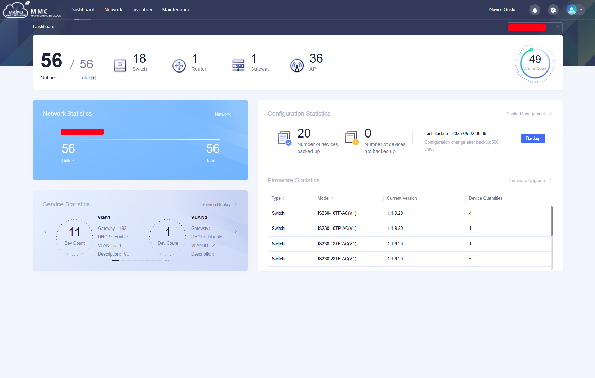
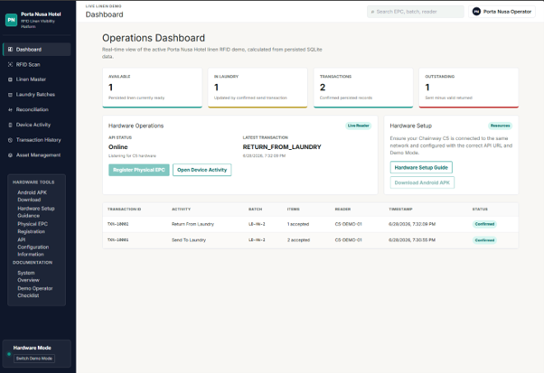
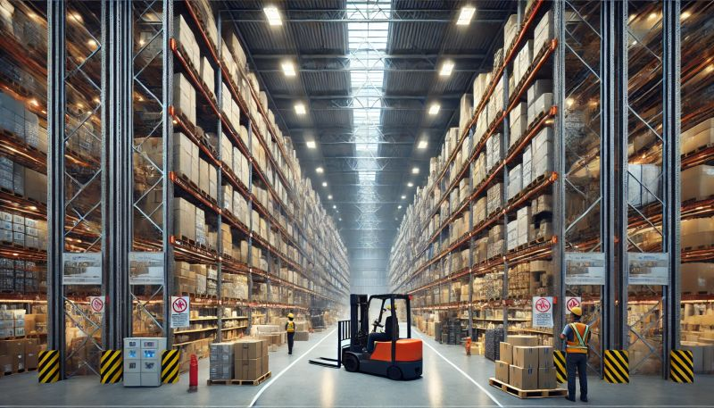
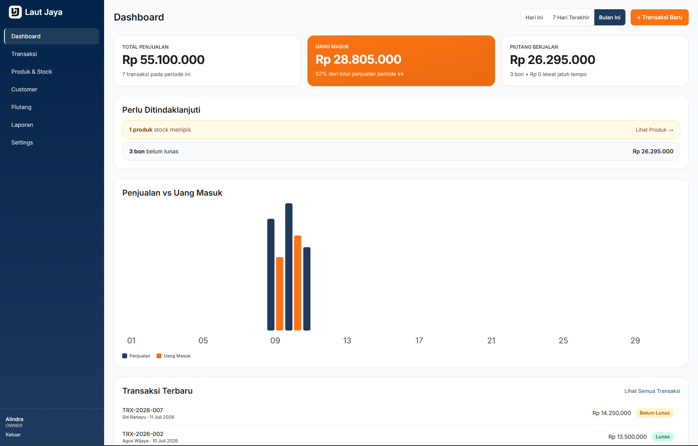
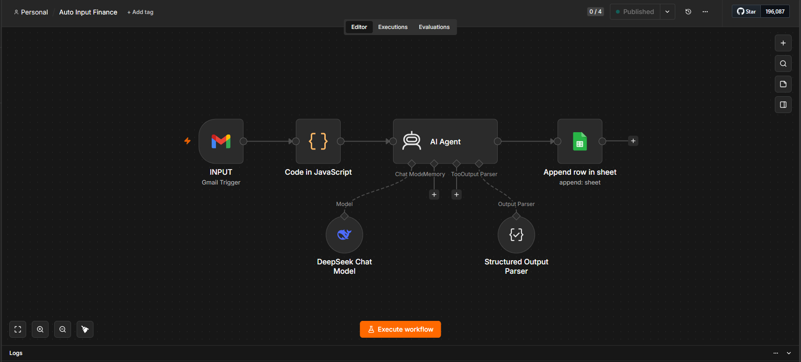
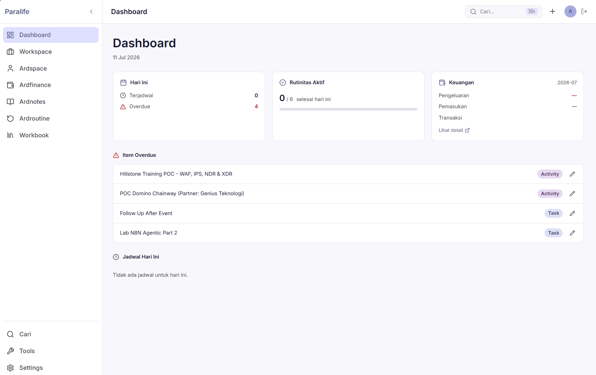

Requirement Discovery
Memahami kebutuhan, batasan, kondisi existing, dan hasil yang ingin dicapai.
Presales Engineer · Technology Builder
Saya Alindra Setya Ardana, seorang Presales Engineer yang bekerja di persimpangan antara kebutuhan bisnis dan teknologi. Pengalaman saya mencakup enterprise network, security, infrastructure, RFID, system integration, automation, serta berbagai eksperimen software dan AI.
Terbuka untuk diskusi profesional, kolaborasi, dan pertukaran pengalaman.
About
Saya tertarik pada cara teknologi dapat diterjemahkan menjadi solusi yang benar-benar bisa digunakan. Dalam pekerjaan sebagai Presales Engineer, saya membantu memahami kebutuhan, memetakan solusi, melakukan technical validation, dan menjelaskan teknologi agar lebih mudah dipahami oleh pelanggan maupun partner.
Di luar pekerjaan utama, saya juga membangun aplikasi, automation, dan berbagai eksperimen teknologi. Website ini menjadi tempat saya memperkenalkan diri, membagikan pengalaman, mendokumentasikan proyek, serta mencatat hal-hal yang sedang saya pelajari.
Working method
Saya biasanya mulai dari memahami konteks dan batasan, lalu memetakan masalah sebelum menentukan solusi teknis. Pendekatan ini membantu saya menjaga diskusi tetap praktis, mudah dijelaskan, dan bisa divalidasi dengan bukti.
Memahami kebutuhan, batasan, kondisi existing, dan hasil yang ingin dicapai.
Menghubungkan kebutuhan bisnis dengan arsitektur, produk, dan pendekatan implementasi yang relevan.
Menyiapkan demo, proof of concept, sizing, pengujian, serta bukti teknis sebelum solusi direkomendasikan.
Menjelaskan solusi kepada pelanggan, partner, sales, dan engineer dengan tingkat kedalaman yang sesuai.
Membantu menjaga kesesuaian antara desain solusi, kebutuhan awal, dan kondisi implementasi di lapangan.
Experience
Area berikut adalah ruang teknologi yang saya pahami, pernah saya sentuh, atau dapat saya hubungkan dalam konteks solusi. Ini bukan berarti saya menempatkan diri sebagai expert di semua bidang; fokus utama saya ada di network, RFID, serta AI dan automation.
Pengalaman dalam kebutuhan jaringan enterprise, termasuk desain konektivitas, segmentasi, dan diskusi teknis dengan stakeholder.
Terlibat dalam pemetaan kebutuhan security dan komunikasi solusi yang sesuai dengan risiko serta kondisi operasional.
Membantu membaca kebutuhan infrastructure, datacenter, dan platform pendukung agar desain solusi lebih realistis untuk diterapkan.
Mengerjakan pendekatan RFID untuk membantu visibilitas aset dan pergerakan operasional tanpa membuka detail pelanggan.
Membangun dan mengeksplorasi automation untuk menghubungkan data, workflow, dan sistem yang sebelumnya berjalan terpisah.
Mengembangkan aplikasi dan eksperimen AI sebagai cara belajar, membuat prototipe, dan menguji ide secara praktis.
Selected work
Berikut ini beberapa project yang saya handle, baik dalam konteks profesional maupun pribadi. Sebagian berupa case study, sebagian lainnya adalah eksperimen untuk menguji ide, workflow, dan pendekatan integrasi.
Problem or context: Sebuah rumah sakit baru belum memiliki network, sehingga dibutuhkan solusi end-to-end untuk router, switch, dan access point.
Role: Presales Engineer dan after sales support untuk periode sementara.
Solution summary: Memberikan solusi end-to-end menggunakan Maipu agar kebutuhan network dasar rumah sakit dapat mendukung operasional.
Network design · Router · Switch · Access point · Maipu

Problem or context: Solusi visibilitas pergerakan linen yang menghubungkan software, RFID, dan workflow operasional hospitality.
Role: Membantu memetakan kebutuhan, alur solusi, dan pembuktian teknis tanpa membuka informasi pelanggan.
Solution summary: Pendekatan integrasi RFID dan software untuk membuat pergerakan item lebih mudah dilihat oleh tim operasional.
RFID · System integration · Operational workflow

Problem or context: Setelah proses produksi, penempatan barang di gudang masih membutuhkan operator forklift dan operator system untuk mendata serta menempatkan barang. Proses ini rentan terkendala karena human error.
Role: Presales Engineer yang menyesuaikan solusi product dengan kondisi customer, termasuk proses proof of concept.
Solution summary: Membawa solusi RFID dengan tag pada palet dan rack, fixed reader di depan forklift, serta tablet agar operasional dapat dilakukan oleh satu operator forklift.
RFID · Warehouse operation · Fixed reader · Pallet and rack tagging · POC

Problem or context: Usaha penjualan diesel dan minyak memiliki kendala visibility terhadap stok barang dan aktivitas penjualan.
Role: Solution Builder dan AI Assisted Developer.
Solution summary: Membuat aplikasi berbasis website dan Android untuk mendukung operasional Laut Jaya, terutama pada pencatatan stok barang dan penjualan.
Web application · Android application · Stock visibility · Sales operation

Problem or context: Pendataan pengeluaran pribadi sering kali sulit dijaga konsistensinya jika dilakukan secara manual.
Role: Solution Builder.
Solution summary: Memanfaatkan n8n untuk otomatisasi input ke sistem finance pribadi, sehingga pencatatan pengeluaran dapat berjalan lebih terstruktur.
n8n · Personal finance · Workflow automation · Data entry

Problem or context: Dalam kehidupan harian, sering kali dibutuhkan second brain untuk membantu menjaga keseimbangan antara kebutuhan personal dan profesional.
Role: Solution Builder dan AI Assisted Developer.
Solution summary: Menuangkan metode PARA, timeboxing, dan centralized management ke dalam aplikasi website dan Android untuk mendukung operasional harian yang terasa lebih personal dibandingkan menggunakan Notion atau aplikasi sejenis.
PARA method · Timeboxing · Centralized management · Web and Android application · AI assisted development

Approach
Masalah bukan sesuatu yang perlu ditakuti, tetapi perlu disikapi dengan baik. Dalam pekerjaan maupun proses belajar, setiap hal hampir pasti punya masalahnya sendiri, dan dari cara kita memahami serta menyelesaikannya, kita bisa berkembang.
Mendengarkan laporan, mengumpulkan konteks, dan memastikan masalah yang dibahas benar-benar sama dengan yang dialami di lapangan.
Memisahkan gejala dari inti permasalahan, termasuk batasan teknis, operasional, dan ekspektasi yang perlu diluruskan.
Mencari opsi penyelesaian yang paling masuk akal, mulai dari workaround cepat sampai perbaikan yang lebih permanen.
Jika masalah berada di luar kewenangan atau butuh keahlian lain, saya koordinasikan dengan pihak yang tepat agar proses tidak berhenti.
Memastikan solusi dipahami, diterapkan dengan benar, dan menjawab masalah utama sebelum dianggap selesai.
Menutup pembahasan dengan catatan yang jelas, lalu mengambil pembelajaran agar masalah serupa bisa ditangani lebih baik ke depan.
Notes
Saya menulis tentang hal-hal yang saya temui dan pelajari, mulai dari network, security, infrastructure, RFID, automation, software development, AI, hingga proses belajar dan pengembangan diri.
Baca Catatan SayaIndependent initiative
Di luar pekerjaan utama, saya mengembangkan proyek dan solusi digital secara independen melalui Alink Tech, mulai dari landing page, operational system untuk UMKM, business automation, hingga AI integration ketika memang dibutuhkan.
Explore Alink TechContact
Terbuka untuk diskusi profesional, kolaborasi, sharing pengalaman, dan proyek independen. Untuk peluang profesional atau kebutuhan CV lengkap, silakan hubungi saya secara langsung.
Detailed CV is available upon request.